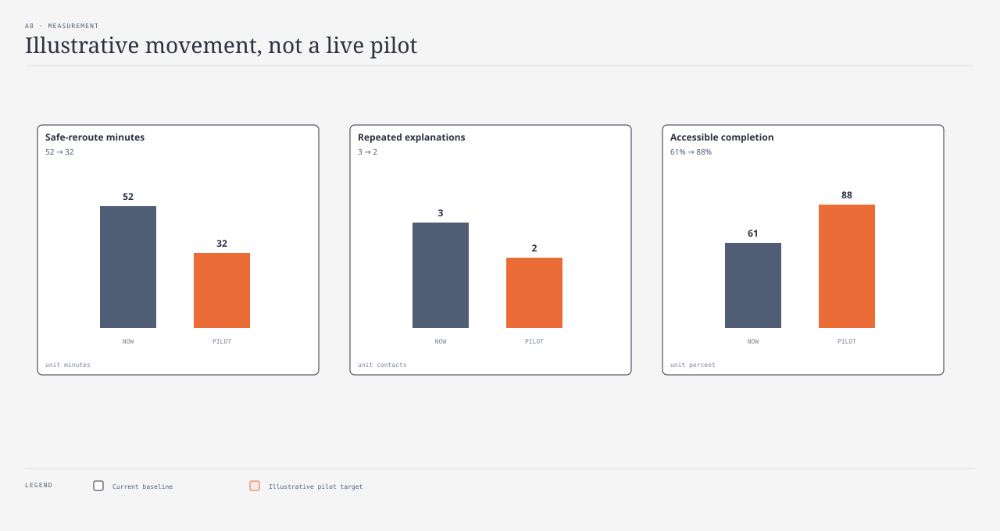

kpi-tree · Aaron · @sd-measurer · passed · 65e0f621

| ID | Tier | Metric | Baseline | Target |
|---|---|---|---|---|
| K01 | outcome | Accessible trip completion % | 61 | 88 |
| K02 | experience | Acknowledgement minutes | 42 | 12 |
| K03 | experience | Human escalation reached % | 54 | 90 |
| K04 | operational | Duplicate update minutes | 18 | 6 |
| K05 | quality | Recovery message comprehension % | 72 | 92 |
| K06 | equity | Accessible rider confidence / 5 | 2.8 | 4.2 |